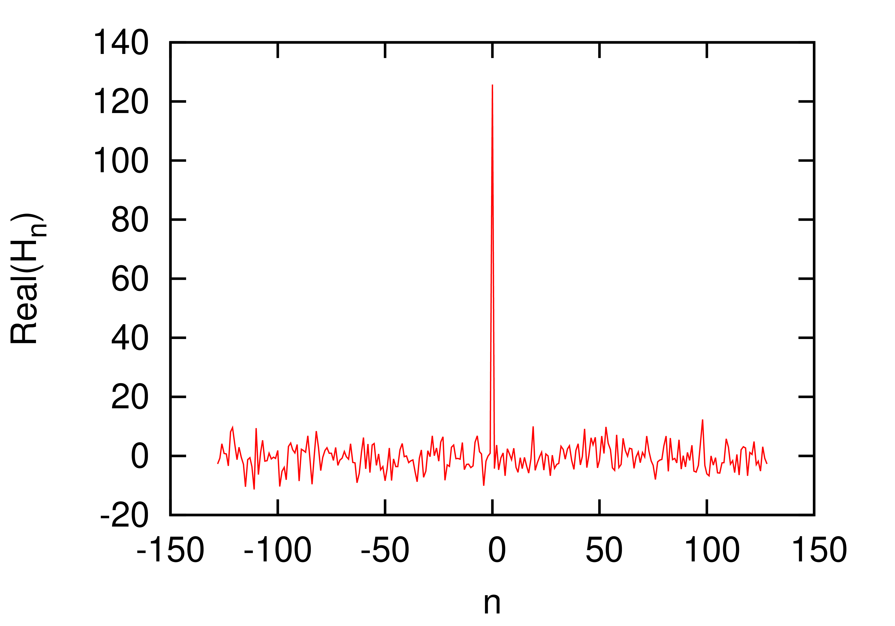

is a function of period
is a function of period  , then it can be proved that
can be expressed as the following series
, then it can be proved that
can be expressed as the following series
|
Abstract
These notes review the (very) basic theory of Fourier analysis.
These notes were written when I was developing numerical codes that need to use FFT libraries. I learned the Fourier series and Fourier transform in calculus courses when I was a undergraduate student. To numerically use this mathematical method in practice, one additional necessary step is to know the Discrete Fourier Transform (DFT). There are many online material discussing these topics and I read some of them. But finally I found that I need to derive all the relevant formulas step by step by myself to convince myself that I fully understand the DFT and its many variations, such as discrete sine transform, to make sure I am correctly using the output of FFT libraries.
The Fast Fourier Transform algorithm (FFT) is among the top ten algorithms that have changed the world. However, we do not need to know the details about this algorithm itself, which is essentially an efficient way of computing the summation involved in the DFT. What we need to know is how the DFT is defined (so that we know how it can be used) and how it is related to the output of the various subroutines in various FFT computer libraries (e.g. FFTW). This is the emphasis of these notes, which give step by step derivation of the definition of DFT and its variations such as the discrete sine transform.
If is a function of period , then it can be proved that
can be expressed as the following series
| (1) |
which is called Fourier series. It is not trivial to prove the above
statement (what is needed in the proof is to prove that the set of
functions and with is a “complete set”[1]). We
will not concern us here with this proof and simply start working with
the Fourier series in Eq. (1). At this point it is not
clear yet what the coefficients and  are. These can be obtained by taking product of Eq. (1) with
are. These can be obtained by taking product of Eq. (1) with  and
and  , respectively, and then integrating form to
, respectively, and then integrating form to  , which
gives
, which
gives
 |
(2) |
and
 |
(3) |
| (4) |
for . In order to make the coefficients be uniformly expressed by Eq. (3), we modify the Fourier series to the following form
 |
(5) |
Then all coefficients with
can be evaluated by using Eq. (3). If
is a complex-valued function (the independent variable  is still a real number), then the above Fourier expansion can be applied
to its real part and imaginary part, respectively. Combining the
results, we can see that Eqs. (3)-(5) is still
valid when
is still a real number), then the above Fourier expansion can be applied
to its real part and imaginary part, respectively. Combining the
results, we can see that Eqs. (3)-(5) is still
valid when  is a complex-valued function. In this
case, and are complex
numbers.
is a complex-valued function. In this
case, and are complex
numbers.
Note that sine and cosine are essentially the same function: one can be
obtained from the other by shifting, i.e., they differs only in the
“phase”. For the case that is
real-valued, using trigonometric identities, expression (5)
can be expressed in terms of only cosine/sine functions:
| (6) |
where the amplitude
 |
(7) |
and the initial phase
 |
(8) |
where  is a Fortran function computing the
poloidal angle of Cartesian point
is a Fortran function computing the
poloidal angle of Cartesian point  ,
which determines the angle in the correct quadrant. Note that these
formulas are valid only for the case that is
real-valued (and thus and
are also real-valued).
,
which determines the angle in the correct quadrant. Note that these
formulas are valid only for the case that is
real-valued (and thus and
are also real-valued).

The Fourier series can also be expressed in terms of the complex-valued
basis functions . Next, we
derive this version of the Fourier series. Using Euler's formula (this
is a bridge between representations using real numbers and complex
numbers)
 |
(9) |
and
| (10) |
in Eq. (5), we obtain
| (11) |
which can be organized as
 |
(12) |
And this form motivates us to define
| (13) |
where  (note ),
then Eq. (12) is written
(note ),
then Eq. (12) is written
 |
(14) |
Furthermore, using the expression of and , we find that
and in Eq. (13) can be uniformly
expressed as
| (15) |
Equations (14) along with Eq. (15) gives a
compact form of the Fourier series. In this expansion,  is an integer from negative infinity to positive infinity, which is
unlike Eq. (1), where is from zero
to positive infinity.
is an integer from negative infinity to positive infinity, which is
unlike Eq. (1), where is from zero
to positive infinity.
On the other hand, using Eq. (13), the coefficients and appearing in Eq. (1) can be recovered from by
 |
(16) |
 |
(17) |
Note that if is real, then the coefficients and are real while the
coefficient are complex-valued. In this case,
equation (13) implies that and are complex conjugates. In this case, expressions (16) and (17) are simplified as
| (18) |
 |
(19) |
In terms of , the and in Eqs. (7) and (8) are written as
 |
(20) |
and
 |
(21) |
[In the above, we use the basis functions to
expand . If we choose the
basis functions to be  , then
it is ready to verify that the Fourier series are written
, then
it is ready to verify that the Fourier series are written
| (22) |
with given by
| (23) |
In this case, the coefficients and can be recovered from by
| (24) |
 |
(25) |
In using the Fourier series, we should be aware of which basis functions are used.]
–––––tmp
 |
(26) |
| (27) |
 |
(28) |
| (29) |
 |
(30) |
 |
(31) |
| (32) |
—tmp
For a periodic function  with a period of
with a period of  , Fourier series are written as
, Fourier series are written as
| (33) |
with the coefficient given by
| (34) |
How to numerically compute the Fourier expansion coefficient? A simple way is to use the rectangle formula to approximate the integration in Eq. (34), i.e.,
| (35) |
where and with and . Note Eq.
(35) is an approximation, which will become exact if  . In practice, we can sample only with a nonzero
. In practice, we can sample only with a nonzero  .
Therefore Eq. (35) is usually an approximation. Do we have
some rules to choose a suitable so that Eq. (35) can become a good approximation or even an exact relation?
This important question is answered by the sampling theorem, which sates
that a suitable
.
Therefore Eq. (35) is usually an approximation. Do we have
some rules to choose a suitable so that Eq. (35) can become a good approximation or even an exact relation?
This important question is answered by the sampling theorem, which sates
that a suitable  to make Eq. (35)
exact is given by
to make Eq. (35)
exact is given by  , where
is the largest frequency contained in (i.e, is zero for
, where
is the largest frequency contained in (i.e, is zero for  ).
).
The Fourier series discussed above indicates that a periodic function is composed of discrete spectrum and is written as
| (36) |
where is the period of . The th
term of the above Fourier series corresponds to a harmonic with
frequency
 |
(37) |
and the expansion coefficient is given by
| (38) |
In terms of , the coefficient in Eq. (38) is written
 |
(39) |
In terms of , the Fourier series in Eq. (36) is written
Note that is the value of function  at . Further
note that the interval between and
at . Further
note that the interval between and  is
is  . Thus the
above summation is the rectangular formula for numerically calculating
the integration
. Thus the
above summation is the rectangular formula for numerically calculating
the integration  . Therefore,
equation (40) can be approximately written as
. Therefore,
equation (40) can be approximately written as
| (41) |
which will become exact when the interval  ,
i.e., . Therefore, for the
case , the Fourier series
exactly becomes
,
i.e., . Therefore, for the
case , the Fourier series
exactly becomes
| (42) |
where  is given by Eq. (39), i.e.,
is given by Eq. (39), i.e.,
 |
(43) |
Note that the function given in Eq. (42)
is proportional to  while the function given in Eq. (43) is proportional to . Since , it is desired to eliminate the
and factors in Eqs. (42) and (43), which can be easily achieved by defining a new function
while the function given in Eq. (43) is proportional to . Since , it is desired to eliminate the
and factors in Eqs. (42) and (43), which can be easily achieved by defining a new function
 |
(44) |
Then equations (42) and (43) are written as
 |
(45) |
| (46) |
Equations (45) and (46) are the Fourier transformation pairs discussed in the next section.
As discussed above, the Fourier transformation of a function is given by
| (47) |
Once the Fourier transformation  is known, the
original function can be reconstructed via
is known, the
original function can be reconstructed via
| (48) |
[Note that the signs in the exponential of Eq. (45) and (46) are opposite. Which one should be minus or positive is
actually a matter of convention because a trivial variable substitution
 can change the sign between minus and positive.
Proof. In terms of
can change the sign between minus and positive.
Proof. In terms of  , Eq. (48) is written
, Eq. (48) is written
Define
Then Eq. (49) is written
 |
(51) |
The signs in the exponential of Eqs. (50) and (51) are opposite to Eqs. (47) and (48), respectively. The book “Numerical recipe”[2] uses (50) as the forward Fourier transformation and Eq. (51) as the backward one. However, the open-source software FFTW uses Eqs. (46) as the forward transformation and Eq. (45) as the backward one. When using a Fourier transformation library, it is necessary to know which convention is used in order to correctly use the output of the library.]
[Some physicists prefer to use the angular frequency
rather than the frequency  to represent the
Fourier transformation. Using
to represent the
Fourier transformation. Using  ,
equations. (47) and (48) are written,
respectively, as
,
equations. (47) and (48) are written,
respectively, as
 |
(52) |
| (53) |
where we see that the asymmetry between the Fourier transformation and
its inverse is more severe in this representation: besides the
opposite-sign in the exponents, there is also a  factor difference between the Fourier transformation and its inverse.
Whether the factor appears at the forward
transformation or inverse one is actually a matter of convention. The
only requirement is that the product of the two factors in the forward
and inverse transformation is equal to .
To obtain a more symmetric pair, one can adopt a factor
at both the forward and inverse transformation. The representation in
Eqs. (47) and (48) is adopted in this note.
But we should know how to change to the
representation when needed.]
factor difference between the Fourier transformation and its inverse.
Whether the factor appears at the forward
transformation or inverse one is actually a matter of convention. The
only requirement is that the product of the two factors in the forward
and inverse transformation is equal to .
To obtain a more symmetric pair, one can adopt a factor
at both the forward and inverse transformation. The representation in
Eqs. (47) and (48) is adopted in this note.
But we should know how to change to the
representation when needed.]
[
| (54) |
]
Next, consider how to numerically compute the Fourier transformation of a function . A simple way is to use the rectangle formula to approximate the integration in Eq. (47), i.e.,
 |
(55) |
where and with  . Note Eq. (55) is an
approximation, which will become exact if .
In practice, we can sample only with a nonzero
. Therefore Eq. (55)
is usually an approximation. Do we have some rules to choose a suitable
so that Eq. (55) can become a good
approximation or even an exact relation? This important question is
answered by the sampling theorem, which sates that a suitable to make Eq. (55) exact is given by , where
. Note Eq. (55) is an
approximation, which will become exact if .
In practice, we can sample only with a nonzero
. Therefore Eq. (55)
is usually an approximation. Do we have some rules to choose a suitable
so that Eq. (55) can become a good
approximation or even an exact relation? This important question is
answered by the sampling theorem, which sates that a suitable to make Eq. (55) exact is given by , where  is
the largest frequency contained in (i.e., for ).
is
the largest frequency contained in (i.e., for ).
In computational and experimental work, we know only a list of values
 sampled at discrete values of
sampled at discrete values of  . Let us suppose that
is sampled with uniform interval between consecutive points:
. Let us suppose that
is sampled with uniform interval between consecutive points:
 |
(56) |
The sampling rate is defined by  .
The sampling theorem states that: If the Fourier transformation of
function , , has the following property
.
The sampling theorem states that: If the Fourier transformation of
function , , has the following property
| (57) |
then sampling with the sampling rate (i.e., ) will
completely determine , which
is given explicitly by the formula
 |
(58) |
We will not concern us here with the proof of the sampling theorem and simply start working with Eq. (58) to derive the concrete expression for the Fourier transformation of . Substituting the expression (58) for into the Fourier transformation (47), we obtain the explicit form of the Fourier transformation of :
With the help of Wolfram Mathematica, the integration in Eq. (59) is evaluated analytically, giving
 |
(60) |
Using this, Eq. (59) is written
 |
(61) |
which shows that for , which is consistent with the assumption of
sampling theorem, i.e., has the property given
in Eq. (57). The second line of Eq. (61) is
identical to Eq. (55) except that Eq. (61) in
this case is exact while Eq. (55) is only approximate. In
other words, if , then the
Fourier transformation is exactly given by Eq. (61), where
is the largest frequency contained in (i.e., for ).
Suppose that a function is sampled with a
sampling frequency , and we
know (by some other means) that the largest frequency contained in is less than  ,
then the sampling theorem indicates that the Fourier transformation for
,
then the sampling theorem indicates that the Fourier transformation for  can be written as
can be written as
 |
(62) |
Assume that the function is periodic with period
and is sampled in one period with  with
with  , in which
, in which
 , as shown in Fig. 1.
, as shown in Fig. 1.
Then the infinite summation in Eq. (62) reduces to the following partial sum:
| (63) |
where is the number of periods during the
infinite time. Since is periodic with period
, Fourier series theorem
implies that is nonzero only at discrete
frequencies given by  .
Further recall that the condition required by the sampling theory is
that is nonzero only within . Therefore all nonzero values of , which need to be evaluated and stored, are at
.
Further recall that the condition required by the sampling theory is
that is nonzero only within . Therefore all nonzero values of , which need to be evaluated and stored, are at
| (64) |
with (we consider only the case that  is an even number). Evaluate given
by Eq. (63) at ,
then
is an even number). Evaluate given
by Eq. (63) at ,
then  is written as
is written as
 |
(65) |
The partial summation in Eq. (65),
 |
(66) |
is called the Discrete Fourier transformation (DFT).
(The efficient algorithm of computing the DFT is discussed in Appendix
A.) Using Eqs. (65) and (66), we
know  is related to the value of Fourier
transform at by
is related to the value of Fourier
transform at by
| (67) |
and the Fourier expansion coefficients in Eq. (35) by
| (68) |
The DFT of time-domain array with is given by Eq. (66), i.e.,
 |
(69) |
with , where  .
.
Note that the subscript of is in the range while the subscript of is in
the range . Further note that
contains  elements while
contains only elements.
It is ready to find that the array defined in Eq. (69) has
the following periodic property
elements while
contains only elements.
It is ready to find that the array defined in Eq. (69) has
the following periodic property
 |
(70) |
Using this general property, we obtain ,
i.e., the two ending elements of ,
namely and  ,
are equal to each other. Thus only one value is needed to be stored.
This can be used to reduce the number of elements of
that need to be stored by one. Then contains
only elements rather than . Furthermore, we prefer to make the index of and array have the same
range, i.e., . This can be
done by storing the negative frequency part (i.e.,
,
are equal to each other. Thus only one value is needed to be stored.
This can be used to reduce the number of elements of
that need to be stored by one. Then contains
only elements rather than . Furthermore, we prefer to make the index of and array have the same
range, i.e., . This can be
done by storing the negative frequency part (i.e.,  ) of in the location
where the subscripts are respectively
) of in the location
where the subscripts are respectively  ,
as is shown in Fig 2. A naive method of implementing this
in a code is to first calculate the values of in
the range , then shift the
array to achieve the desired storage arrangement, as is shown in Fig 2. It turns out that we have a better way to achieve the same
goal: using again the periodic property Eq. (70), we know
that the value of the array elements with
negative subscripts, ,
happens to be equal to the value of the elements
with subscripts ,
respectively. Using this, we can simply use Eq. (69) to
calculate values of in the range
,
as is shown in Fig 2. A naive method of implementing this
in a code is to first calculate the values of in
the range , then shift the
array to achieve the desired storage arrangement, as is shown in Fig 2. It turns out that we have a better way to achieve the same
goal: using again the periodic property Eq. (70), we know
that the value of the array elements with
negative subscripts, ,
happens to be equal to the value of the elements
with subscripts ,
respectively. Using this, we can simply use Eq. (69) to
calculate values of in the range  and the array obtained is exactly in the desired storage
arrangement.
and the array obtained is exactly in the desired storage
arrangement.
|
In practice, we do not use Eq. (69) directly to calculate
. Instead, the famous Fast
Fourier Transformation (FFT) algorithm is used to calculate with  . Remember
the storage arrangement discussed above is important for one to
correctly interpret and use the output of FFT. For example, what
frequency does the element
. Remember
the storage arrangement discussed above is important for one to
correctly interpret and use the output of FFT. For example, what
frequency does the element  with
with  correspond to? The answer is obvious if we know the storage arrangement
of FFT output: the corresponding frequency of No. th element is given by
correspond to? The answer is obvious if we know the storage arrangement
of FFT output: the corresponding frequency of No. th element is given by
| (71) |
Define  , then Eq. (71)
can be written as
, then Eq. (71)
can be written as
 |
(72) |
Here  is the spacing in the frequency domain and
is called frequency resolution.
is the spacing in the frequency domain and
is called frequency resolution.
Q: What is the negative frequency counterpart of the element for ? A: Examining the storage
arrangement shown in Fig. 2, we know it is the element
 .
.
The frequency interval between neighbor DFT points is , where is the
time-window in which the signal is sampled. This frequency interval is
called frequency resolution, which is determined only by the length of
the time-window and is independent of the sampling frequency. If the
time-window is fixed, increasing the sampling frequency only increase
the bandwidth (the frequency range of DFT) and the frequency interval
between neighbor DFT points are still ,
i.e., the frequency resolution is not changed. In summary,
Bandwidth is the highest frequency that is captured in the
Fourier transform, equal to half the sampling rate. Frequency
Resolution is the spacing between samples in the frequency domain.
The Fourier series of
 |
(73) |
can be approximated as
| (74) |
Using the relation  , the
above equation is written as
, the
above equation is written as
 |
 |
 |
|
|
Using the periodic property of DFT, i.e., , the above expression is written as
Equation (76) provides a formula of constructing an approximate function using the DFT of the discrete samplings of the original function.
Evaluate given by Eq. (76) at the discrete point , yielding
 |
|
 |
|
|
 |
||
|
Drop the blue term (which is negligible if satisfies the sampling theorem), then  is written as
is written as
 |
(78) |
The right-hand side of Eq. (78) is in fact the inverse DFT discussed in Sec. 5.3.
The DFT in Eq. (66),

with and can also be
considered as a set of linear algebraic equations for
and can be solved in terms of ,
which gives
| (79) |
(The details on how to solve Eq. (66) to obtain the
solution (79) is provided in Sec. 5.6.)
Equation (79) recovers from (i.e., the DFT of ),
and thus is called the inverse DFT.
The normalization factor multiplying the DFT and inverse DFT (here  and
and  ) and
the signs of the exponents are merely conventions, and differ in some
treatments. The only requirements of these conventions are that the DFT
and inverse DFT have opposite-sign exponents and that the product of
their normalization factors be .
) and
the signs of the exponents are merely conventions, and differ in some
treatments. The only requirements of these conventions are that the DFT
and inverse DFT have opposite-sign exponents and that the product of
their normalization factors be .
Signals that are not band-limited usually contains all frequencies and
thus do not satisfy the condition required by the sampling theorem
(i.e., for ).
In this case, for any given data, we can still
calculate its DFT by using Eq. (66). However the results
obtained are meaningful only when approaches
zero as the frequency approaches from above and
approaches  from below, i.e., only when the
results obtained are consistent with the assumption used to obtain the
results (the assumption is that for ). When the results obtained do not satisfy the
above condition, then it indicates that the “aliasing
errors” have contributed to the results. We can reduce the
aliasing errors by increasing the sampling frequency. The aliasing
errors can be reduced but can not be completely removed for a
non-band-limited signal. More details on the aliasing errors are needed
here, to be continued.
from below, i.e., only when the
results obtained are consistent with the assumption used to obtain the
results (the assumption is that for ). When the results obtained do not satisfy the
above condition, then it indicates that the “aliasing
errors” have contributed to the results. We can reduce the
aliasing errors by increasing the sampling frequency. The aliasing
errors can be reduced but can not be completely removed for a
non-band-limited signal. More details on the aliasing errors are needed
here, to be continued.
I use the Fortran interface of the FFTW library. To have access to FFTW library, use the following codes:
use, intrinsic :: iso_c_binding implicit none include 'fftw3.f03'
Here the first line uses iso_c_binding module to interface
with C in which FFTW is written. To use the FFT subroutines in FFTW, we
need to define some variables of the desired types, such as
type(C_PTR) :: plan1, plan2 complex(C_DOUBLE_COMPLEX) :: in(0:n-1), out(0:n-1)
Specify what kind of transform to be performed by calling the corresponding “planner” routine:
plan1 = fftw_plan_dft_1d(n, in,out, FFTW_FORWARD,FFTW_ESTIMATE)
Here the “planner” routine for one-dimensional DFT is called. One thing that the “planner” routine does is to factor the matrix mentioned above, in order to get prepared for performing the actual transform. Therefore “planner” do not need the actual data stored in “in” array. What is needed is the length and numerical type of “in” array. It is obvious that the “planner” routine needs to be invoked for only once for a given type of array with the same length.
Store input data in the “in” arrays, then, we can perform a DFT by the following codes:
call fftw_execute_dft(plan1, in, out)
Similarly, we can perform a inverse DFT by the following codes:
plan2 = fftw_plan_dft_1d(ngrids, in,out,FFTW_BACKWARD,FFTW_ESTIMATE) call fftw_execute_dft(plan2, in, out)
After all the transforms are done, we need to manually de-allocate the arrays created by the “planner” routine by calling the “fftw_destroy_plan” routine:
call fftw_destroy_plan(plan2)
Unless they are local arrays, Fortran does not automatically de-allocate
arrays allocated by the acllocate(), so manually
de-allocate all allocated arrays is necessary for preventing memory leak
from appearing.
Note that the forward DFT in FFTW is defined by
| (80) |
and the inverse DFT is defined by
 |
(81) |
where there is no factor in the inverse DFT, and
thus this factor should be included by hand if we want to recover the
original data from the inverse DFT.
In order to solve the linear algebraic equations (66) for
, multiply both sides of each
equation by  and then add all the equations
together, which yields
and then add all the equations
together, which yields
| (82) |
Interchanging the sequence of the two summation on the right-hand side, equation (82) is written
 |
(83) |
Using the fact that (verified by Wolfram Mathematica)
 |
(84) |
where is the Kroneker Delta, equation (83) is written
 |
(85) |
i.e.,
| (86) |
which can be solved to give
| (87) |
Equation (87) is the inverse DFT.
We mentioned (without giving proof) that the set of functions  and
and  with
is a “complete set” in expanding any function in the
interval , where is an arbitrary point. Therefore Fourier series use both
cosine and sine as basis functions to expand a function. Let us
introduce another conclusion (again without giving proof) that the set
of sine functions
with
is a “complete set” in expanding any function in the
interval , where is an arbitrary point. Therefore Fourier series use both
cosine and sine as basis functions to expand a function. Let us
introduce another conclusion (again without giving proof) that the set
of sine functions  with
with  is a “complete set” in expanding any function in the interval .
A similar conclusion is that the set of cosine functions with is a “complete
set” in expanding any function in the
interval . Note that the
argument of the basis functions used in the Fourier expansion differ
from those used in the sine (or cosine) expansion by a factor of two.
is a “complete set” in expanding any function in the interval .
A similar conclusion is that the set of cosine functions with is a “complete
set” in expanding any function in the
interval . Note that the
argument of the basis functions used in the Fourier expansion differ
from those used in the sine (or cosine) expansion by a factor of two.
The first five basis functions used in Fourier expansion, sine expansion, and cosine expansion are plotted in Fig. 3.
The basis function used in the Fourier expansion
have the properties  .
Therefore Fourier expansion works best for function that satisfy . For a functions that do not
satisfies this condition, i.e., a function with
.
Therefore Fourier expansion works best for function that satisfy . For a functions that do not
satisfies this condition, i.e., a function with  , the function can still be considered as a periodic
function with period but having discontinuity
points at the interval boundary. It is well known that Gibbs
oscillations appear near discontinuity points, which can be inner points
in the interval or at the interval boundaries.
, the function can still be considered as a periodic
function with period but having discontinuity
points at the interval boundary. It is well known that Gibbs
oscillations appear near discontinuity points, which can be inner points
in the interval or at the interval boundaries.
The basis functions used in the sine expansion
have the properties  .
Therefore since expansion works best for functions that satisfy
.
Therefore since expansion works best for functions that satisfy  . For functions that do not
satisfies this condition, there will be Gibbs oscillations near the
interval boundary when approximated by using the sine expansion.
Examples are shown in Fig. 4.
. For functions that do not
satisfies this condition, there will be Gibbs oscillations near the
interval boundary when approximated by using the sine expansion.
Examples are shown in Fig. 4.
The basis functions used in the cosine expansion have the properties . Therefore cosine expansion works best for functions that satisfy . For functions that do not satisfies this condition, there will be Gibbs oscillations near the interval boundary when approximated by using the cosine expansion (to be verified numerically by me).
 |
Figure 4. Left: constant function
|
Next, let us discuss the sine and cosine transformation.
Figure (5) illustrates the grids used in the following discussion.
There are several slightly different types of Discrete Sine Transforms (DST). One form I saw in W. Press's numerical recipe book is given by
| (88) |
where are assumed. This form can be formally
obtained by replacing DFT's exponential function  by . The inverse sine
transformation is given by (I did not derive this, but had numerically
verified that this transform recovers the original data if applied after
the sine transform (88) (code at
/home/yj/project_new/test_space/sine_expansion/t2.f90))
by . The inverse sine
transformation is given by (I did not derive this, but had numerically
verified that this transform recovers the original data if applied after
the sine transform (88) (code at
/home/yj/project_new/test_space/sine_expansion/t2.f90))
| (89) |
which is identical with the forward sine transformation except for the
normalization factor . (The
elements with index of zero can also be excluded from the summation (88) and (89) since these elements are zero).
Replacing in Eq. (89) by  , we obtain the reconstructing function
, we obtain the reconstructing function
 |
(90) |
We need a fast method of computing the above DST. All fast methods for this finally need to make use of the fast method used in the computation of DFT. To conveniently use the fast method of DFT, we need to define the DST in a way that the DST can be easily connected to the DFT so that the DFT fast method can be easily applied to compute the DST. A standard way of making this easy is to define the DST via the DFT of an odd extension of the original data. Next, let us discuss this.
Let us introduce the Discrete Sine Transform (DST) by odd extending a
given real number sequence and then using the DFT of the extended data
to define DST. There are several slightly different way of odd extending
a given sequence and thus different types of DST. Given a  real number sequence
real number sequence  ,
one frequently adopted odd extension is
,
one frequently adopted odd extension is  .
This odd extension is illustrated in Fig. 6.
.
This odd extension is illustrated in Fig. 6.
As illustrated in Fig. 6, after the old extension, the
total number of points is with  . Then DFT use the
points with index as input. Since the input are
real and odd symmetric sequence, the output of this DFT is an odd
sequence of purely imaginary numbers. Next, let us prove this. The DFT
in this case is given by
. Then DFT use the
points with index as input. Since the input are
real and odd symmetric sequence, the output of this DFT is an odd
sequence of purely imaginary numbers. Next, let us prove this. The DFT
in this case is given by
| (91) |
where  is the odd extension of the original data
. For
is the odd extension of the original data
. For  , the relation between and
is given by
, the relation between and
is given by
 |
(92) |
For , the relation is given by
 |
(93) |
Noting that and  ,
then expression (91) is written as
,
then expression (91) is written as
 |
(94) |
Using , the above expression
is written as
| (95) |
Using the relations (92) and (93) to replace
by ,
the above expression is written
 |
(96) |
Change the definition of the dummy index in the
above summation to make it in the conventional range  , the above expression is written as
, the above expression is written as
Defining to replace the dummy index in the second summation, the above expression is written as
which is a purely imaginary number. Expression (97) also indicates has the following symmetry
 |
(98) |
i.e. odd symmetry. Therefore only half of the data for
with need to be stored, namely
with  . Expression (97)
indicates that and are
definitely zero and thus do not need to be stored. Then the remaining
data to be stored are with
. Expression (97)
indicates that and are
definitely zero and thus do not need to be stored. Then the remaining
data to be stored are with  , i.e.
, i.e.  .
Following the convention of making the index of
in the range , we define
.
Following the convention of making the index of
in the range , we define
 . Then
. Then
| (99) |
with  , which is the index
that we prefer. Finally, the so-called type-I Discrete Sine Transform
(DST-I) is defined based on Eq. (99) via
, which is the index
that we prefer. Finally, the so-called type-I Discrete Sine Transform
(DST-I) is defined based on Eq. (99) via
 |
(100) |
with . This is the RODFT00 transform defined in the FFTW library.
From the above derivation, we know that the DST, , is related to the DFT, , by  ,
and thus the meaning of is in principle clear.
Next, let us use the DST to reconstruct the original function from which
the data are sampled. Since DST is only a special case of DFT,
reconstructing the function using DST follows the same procedure used in
DFT. In DFT, the function is reconstructed via Eq. (76)
(changing to the positive exponent convention), i.e.,
,
and thus the meaning of is in principle clear.
Next, let us use the DST to reconstruct the original function from which
the data are sampled. Since DST is only a special case of DFT,
reconstructing the function using DST follows the same procedure used in
DFT. In DFT, the function is reconstructed via Eq. (76)
(changing to the positive exponent convention), i.e.,
| (101) |
where is the length of the interval in which the
samplings with are made.
For our present case, i.e., an odd extension of the original data, we have and  and
and  . Then Eq. (101)
is written as
. Then Eq. (101)
is written as
 |
(102) |
Using the odd symmetry of , i.e., , the above expansion is written as
 |
(103) |
Define  , and note that , then the above expression is
written as
, and note that , then the above expression is
written as
| (104) |
i.e.,
 |
(105) |
which is simplified as
 |
(106) |
As a convention, we prefer that the summation index begins from 0 and
ends at  . Then expression (106) is written as
. Then expression (106) is written as
Using the relation between DST and DFT, i.e.,  , the above equation is written as
, the above equation is written as
 |
(107) |
This is the formula for constructing the continuous function using the
DST data. This formula is an expansion over the basis functions with the DST acting as the
expansion coefficients. Therefore the direct meaning of the DST, , is that they are the expansion
coefficients when using as the basis functions
to approximate a function in the domain .
From Fig. 6, we know that the interval length is given by ,
where is the uniform spacing between the
original sampling points.
Evaluate the function in Eq. (107) at  with
with  , then we obtain
, then we obtain
It can be proved that  in the above equation
exactly recover used in defining the DST . Therefore Eq. (108)
is the Inverse Discrete Sine Transform.
in the above equation
exactly recover used in defining the DST . Therefore Eq. (108)
is the Inverse Discrete Sine Transform.
to be written
The trigonometric identity
 |
(109) |
indicates that nonlinear interaction between two waves of the same frequency generates zero frequency component and its second harmonic. The process of generating of second-harmonic is also called frequency doubling.
In the above, we go through the process “Fourier seriesFourier transformation DFT”, which corresponds to going from the
discrete case (Fourier series) to the continuous case (Fourier
transformation), and then back to the discrete case (DFT). Since both
Fourier series and DFT are discrete in frequency, it is instructive to
examine the relation between the Fourier coefficient
and the DFT . The Fourier
coefficient of is given by Eq. (38),
i.e.,
 |
(110) |
which can be equivalently written
 |
(111) |
where  . On the other hand, if
is sampled with sampling rate , then the number of sampling points per period
is . Then the frequency at
which the Fourier transform is evaluated in
getting the DFT [Eq. (64)] is written
. On the other hand, if
is sampled with sampling rate , then the number of sampling points per period
is . Then the frequency at
which the Fourier transform is evaluated in
getting the DFT [Eq. (64)] is written
| (112) |
which is identical to the frequency to which the Fourier coefficient
corresponds. Using  in
Eq. (111), we obtain
in
Eq. (111), we obtain
i.e., dividing the DFT by
gives the corresponding Fourier expansion coefficient . We can further use Eqs. (24) and
(25) to recover the Fourier coefficients in terms of
trigonometric functions cosine and sine,
Note that the approximation in Eq. (113) becomes an exact
relation if the largest frequency contained in
is less than .
The DFT is defined by Eq. (66), i.e.,
 |
(115) |
where . Equations (115)
indicates that the DFT is the multiplication of a transformation matrix
 with a column vector , where the transformation matrix
is symmetric and called DFT matrix. In the matrix form, the DFT is
written as
with a column vector , where the transformation matrix
is symmetric and called DFT matrix. In the matrix form, the DFT is
written as
 |
(116) |
If directly using the definition in Eq. (116) to compute
DFT, then a matrix multiplication need to be performed, which requires
operations. The Fast Fourier Transformation
(FFT) algorithm manage to reduce the complexity of computing the DFT
from to  by factoring the
DFT matrix into a product of sparse matrices.
by factoring the
DFT matrix into a product of sparse matrices.
 |
|
||
|
 |
||
|
|||
|
where
Compared with Eq. (1) that uses the trigonometric
functions, Fourier series (14) and (15), which
is expressed in terms of the complex exponential function , is more compact. The convenience introduced
by the complex exponential function can be appreciated more when we deal
with multiple-dimensional Fourier series. For example, a two-dimensional
function  can be expanded as Fourier series about
,
can be expanded as Fourier series about
,
 |
(118) |
where is the period of
in direction. The expansion coefficients can be further expanded as Fourier series about ,
| (119) |
where is the period of in direction. Using Eq. (119) in Eq. (118), we obtain
 |
(120) |
where the coefficients can be written
Equations (120) and (121) give the
two-dimensional Fourier series of .
We see that the extension of Fourier series from one-dimension case to
two-dimension case is straightforward when expressed in terms of the
complex exponential function .
However, if we use , , ,
and  as basis functions, the derivation of the
two-dimensional Fourier series of is a little
complicated (refer to Sec. A.2, where product-to-sum
trigonometric identities are involved to simplify the results).
as basis functions, the derivation of the
two-dimensional Fourier series of is a little
complicated (refer to Sec. A.2, where product-to-sum
trigonometric identities are involved to simplify the results).
The formula for expanding a real-valued two-dimensional function in terms of basis functions and can be readily recovered from Eqs. (120) and (121).
Sine is assumed to be real-valued, we are sure that all the imaginary part of the above expression will cancel each other (need to verify this directly, will do this later). Therefore, the above expansion is simplified to
 |
|
||
|
 |
||
 |
|||
|
|||
 |
|||
|
The final result is given by (need checking**)
| (124) |
where the coefficient is given by
| (125) |
and other coefficients are given by
 |
(126) |
| (127) |
This section is to demonstrate that the derivation of
multiple-dimensional Fourier series will become complicated if we use
the cosine and sine as basis functions. A two-dimensional function can be first expanded as Fourier series about ,
| (128) |
and then the two coefficients and can be further expanded as Fourier series about ,
| (129) |
| (130) |
Substituting Eq. (129) and (130) into Eq. (128), we obtain
Using the product-to-sum trigonometric identities, equation (131) is written
|
 |
||
which can be organized as
The coefficients appearing in Eq. () are written
| (134) |
| (135) |
| (136) |
| (137) |
| (138) |
| (139) |
Then
The following is about a specific FFT subroutine provided by the Numerical recipes book[2]. This is not a general case.
The input and output of the DFT are usually complex numbers. In the
implementation of FFT algorithm provided by Numerical recipes book[2], to avoid using complex numbers, the algorithm adopts the
real number representation of the complex numbers. In this scheme, two
elements of a real number array are used to store one complex number. To
store a complex array “cdata” of length , we will need a real number array
“rdata” of length .
The first elements of array “rdata” will contain the real
part of “cdata(1)”, the second elements of
“rdata” will contain the imaginary part of
“cdata(1)”, and so on.
To test the correctness of the above statement, I generated a real
number array with length by using a random
generating routine and calculate the DFT of the array with two methods.
The real array generated by the random generator are considered to be a
real number representation of a complex array with length . Using the real array as the input of the FFT
routine (the code in ~/project_new/fft). To check the correctness of my
understanding of the input and output of the FFT, I manually convert the
real number of length to a complex array with
length , and use directly the
summation in Eq. (69) to calculate the DFT. The output I
got is obviously a complex array with length . Then I manually convert the complex array to a
real number array of length and plot the output
in Fig. 7 with dashed line. The results in Fig. 7
indicates the results given by the FFT and the naive method used by me
agree with each other well. This proves that my understanding of the
input and output of FFT (especially the storage arrangement) is correct.
Figure 7. The output of a FFT routine (solid line) agrees well with those (dashed line) calculated by directly evaluate the summation in Eq. (69) (the latter is coded by me). The agreement indicates my understanding of the output of FFT (especially the storage arrangement) is correct. Here the time domain data is generated by a random generating routine. |
To clearly show the output of FFT, we recover the real and imaginary part of DFT from the output of FFT and plots the data as a function of their corresponding frequency. The results are given in Fig. 8.
Figure 8. The real (left) and
imaginary (right) part of the discrete Fourier transformation as
a function of the frequency. The point
corresponds to frequency while the point
corresponds to frequency , where |
Consider the calculation of the following integral:
| (141) |
Divide the interval into uniform sub-intervals and define
 |
(142) |
Then the integration in Eq. (141) can be approximated as
| (143) |
Define with integer and . Consider the calculation of . Using Eq. (143), we obtain
Equation (145) indicates the value of the integration can be obtained by calculating the discrete Fourier
transformation of . However,
as discussed in Ref. [2], equation (145) is
not recommended for practical use because the oscillatory nature of the
integral will make Eq. (145) become systematically
inaccurate as increases. Next, consider a new
method, in which is expanded as
| (146) |
Apply the integral operator to both sides of Eq. (146), we obtain
| (147) |
Make the change of variables in the first integral and in the second integral, the above equation is written as
| (148) |
Define and make use of , the above equation is written as
| (149) |
Define
| (150) |
| (151) |
Then Eq. (149) is written as
| (152) |
|
Figure 9. Older version of Fig. 2, created by Metapost, the new version is created by the vector graphic editor in TeXmacs. |


 .
.
 with and
with and  approximated by using the sine
expansion. Right: linear function
approximated by using the sine
expansion. Right: linear function  approximated by using the sine expansion. Gibbs oscillation
appears near the boundaries, where
approximated by using the sine expansion. Gibbs oscillation
appears near the boundaries, where 
 and ends at
and ends at  .
.
 ).
). .
.